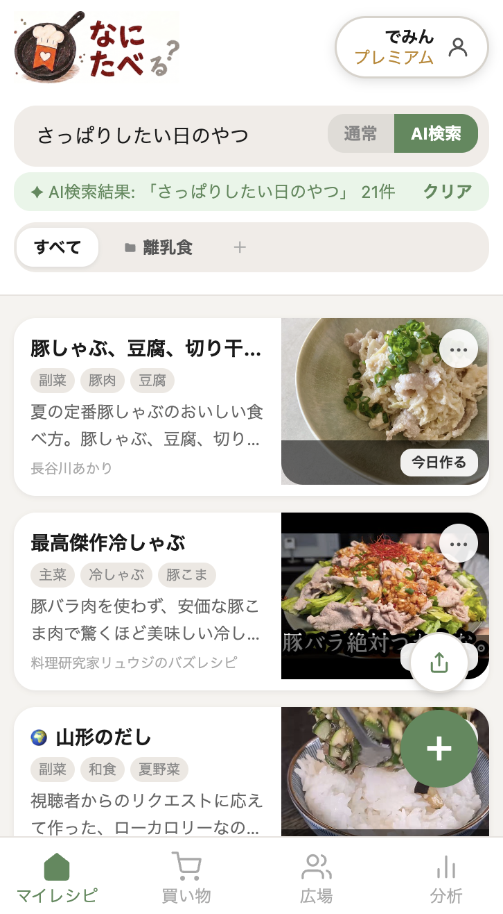

RECIPE COLUMN
作った料理、記録に残せていますか？調理履歴を残す方法
2026年9月26日
「これ、前にも作った気がするけど何回目だっけ」「そういえばあの料理、また作りたいけどレシピどこだっけ」。作った料理そのものは覚えていても、いつ・何回作ったかまでは意外と記憶に残らないものです。
レシピを保存する仕組みを持つアプリは増えましたが、「作った後」の記録まで面倒を見てくれるものは意外と少ないのが実情です。
なぜ「作った記録」が地味に大事なのか
作った記録を残しておくと、日々の料理が少しだけ楽になります。
- 「よく作る定番」が自然と可視化され、次に何を作るか迷う時間が減る
- 「これ美味しかった」という感想を、後から見返せる形で残せる
- 同じ料理を何度も検索し直す手間がなくなる
- 家族やパートナーと「今週何回外食したか／自炊したか」の振り返りができる
特別なことではなく、日々の小さな積み重ねを可視化するだけで、料理へのモチベーションが変わってきます。
記録が続かない理由
「じゃあ記録すればいい」と分かっていても、続かない理由もはっきりしています。
- わざわざ別の日記アプリやメモ帳に書き写すのが面倒
- SNSに投稿しても、タイムラインの奥に流れていって見返せない
- そもそもレシピ自体を探すのに時間がかかっていて、記録どころではない
記録の手間を減らすには、レシピを保存している場所と同じ場所に「作った」を残せる仕組みが必要です。
なにたべなら「今日作る」ボタンを押すだけ
私たちが開発しているなにたべには、保存したレシピのカードに「今日作る」ボタンがあります。作った日にタップするだけで記録が残り、通算の調理回数と最後に作った日が自動で積み上がっていきます。

間違えて押してしまっても、もう一度タップすれば当日分だけ取り消せます。日記のように文章を書く必要はなく、ワンタップで済むのが続けやすいポイントです。
分析タブで振り返れる
記録が溜まると、分析タブで「よく作るレシピランキング」や合計調理回数がまとめて見られるようになります。自分でも気づいていなかった「実は一番作っている定番」が見えてくるのも面白いところです。

「つくれぽ」で写真とひとことも残せる
回数の記録だけでなく、「作った証拠」を写真と感想でも残したいという声から、レシピ詳細に写真＋コメントを投稿できる「つくれぽ」機能を追加しました。仕上がりの写真を撮っておけば、次に作るときの参考にもなります。
公開しているレシピであれば、なにたべ広場の「🍽 つくれぽ」タブにみんなの投稿が新着順に並びます。自分が作ったレシピに誰かがつくれぽを投稿してくれることもあれば、他の人のつくれぽを見て「このレシピ、みんな作ってるんだ」という安心感を得られることもあります。
保存するだけで終わらせず、作った記録・感想・写真まで一箇所にまとめておく。それだけで、日々の料理の積み重ねがちゃんと形に残るようになります。
作った記録を、ワンタップで残しませんか
なにたべを無料で試す →